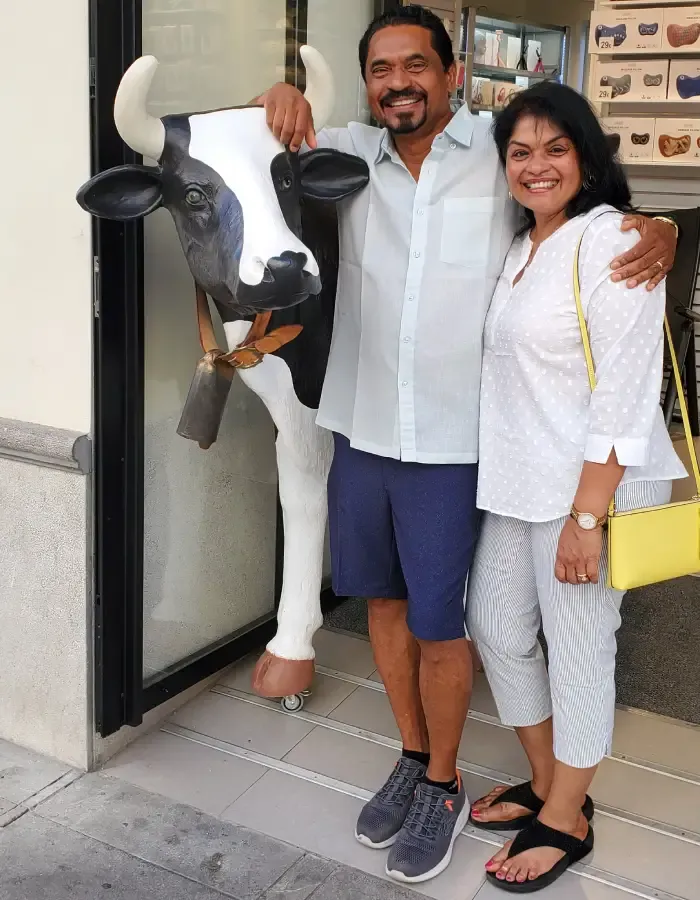
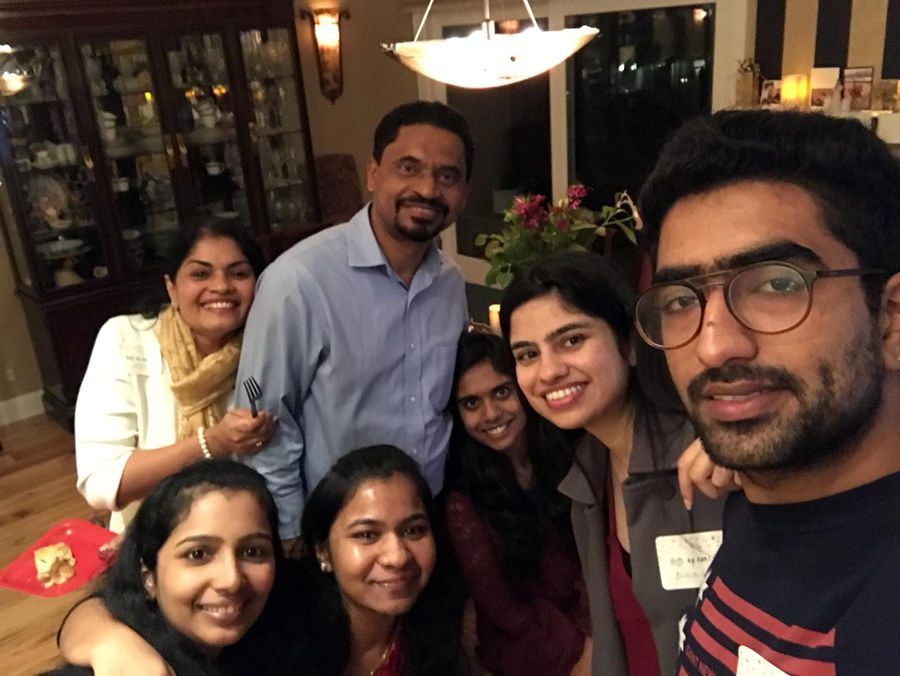
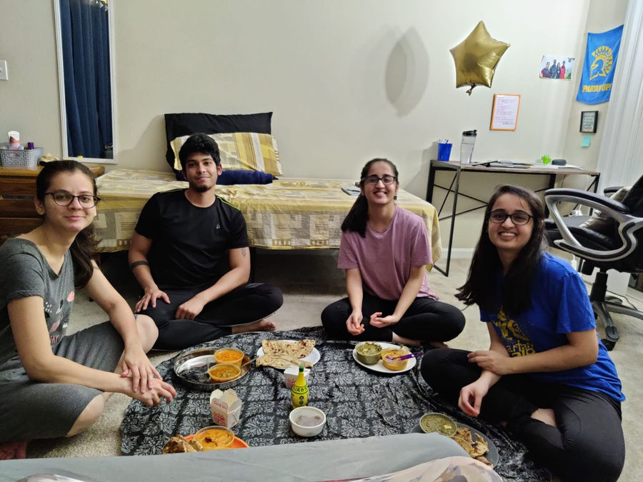
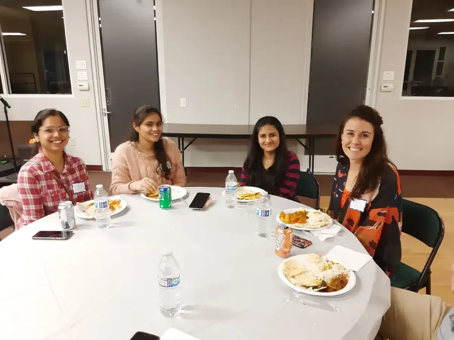
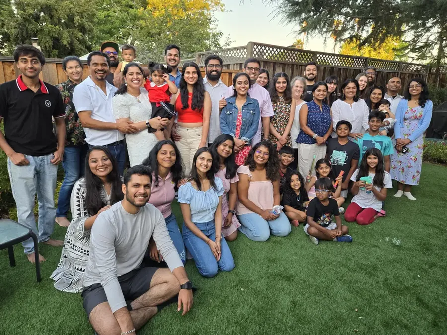

The Kontagious Story

2016: a conversation
Kontagious began with a conversation among Bob Thomas, Ken Raasch and John Christian about Indian professionals moving to the Bay Area and struggling to adjust to American life. John and Carol founded the organization to serve South Asian professionals and their families.

2017–2018: building community
The group first built community through social events such as Bollywood dance nights, park yoga and chai gatherings. In 2018, relationships with students at San José State University showed that international graduate students especially needed community, guidance and care. That became our focus.

2020: meeting students at the airport
During COVID-19 lockdowns, our team met students at airports, offering rides, meals, shopping help and a sense of belonging. Over 1,500 students were helped across three semesters.

Today
Kontagious now has student communities at San José State and Santa Clara University. Programs include resume workshops, interview preparation, leadership training, retreats, hikes and cultural events. Many students we once served now lead and mentor the next group.




Kontagious is a journey from stranger to family, from uncertainty to purpose, and from being served to serving others.